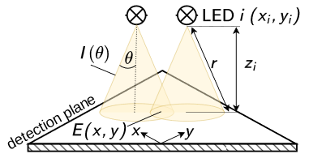

Multi-Batch Screening Reactor - Designing a Direct Irradiation Module Documentation
Overview
{kind=link}

Figure 1 Overview of the geometric model for the direct irradiation module design.
This project is part of the publication Making Photocatalyst Screening Photo-Efficient – Geometric Radiation Field Model Assisted Design of a Direct Irradiation Module for the Multi-Batch Screening Reactor (DOI: 10.5281/zenodo.17867874).
This documentation provides comprehensive guides and API references for designing and optimizing the presented direct irradiation module. It covers:
Required components and assembly instructions for the direct irradiation module
Methodology for radiometry and raytracing simulations to validate the geometric model
Detailed API documentation of the sampling algorithms, the geometric model and the optimization routine used for module design as well as the evaluation of the radiometry and raytracing simulations.
The underlying Python code, radiometry data, and raytracing simulations are available on GitHub and Zenodo.